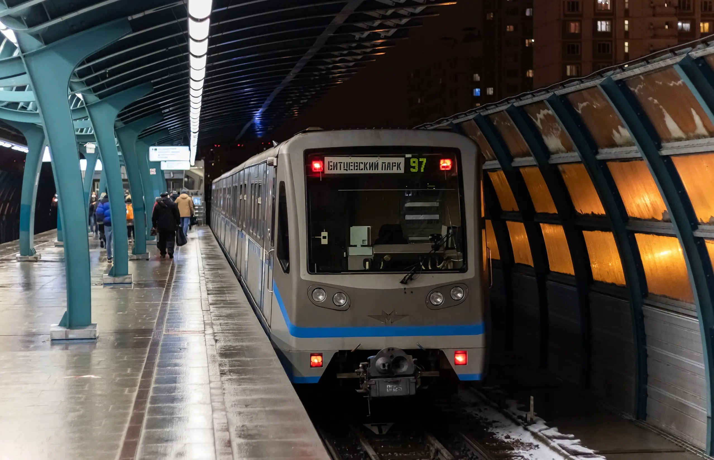
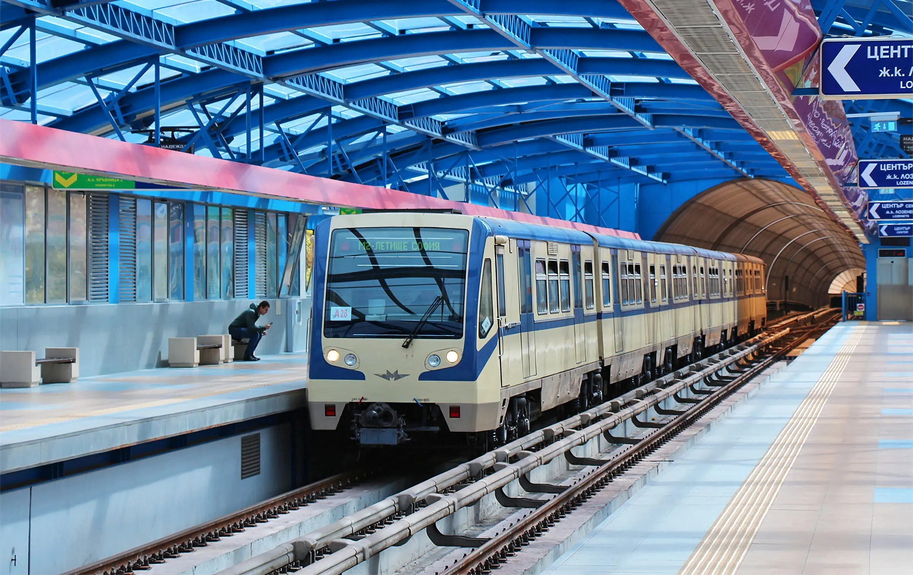
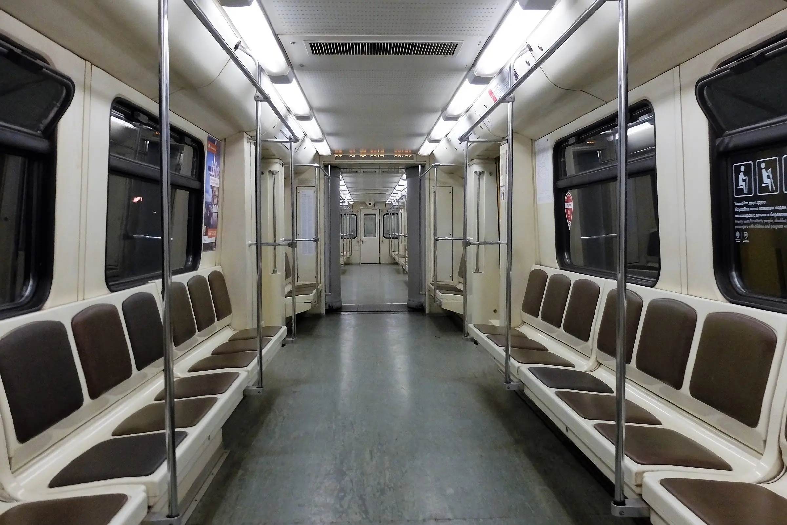
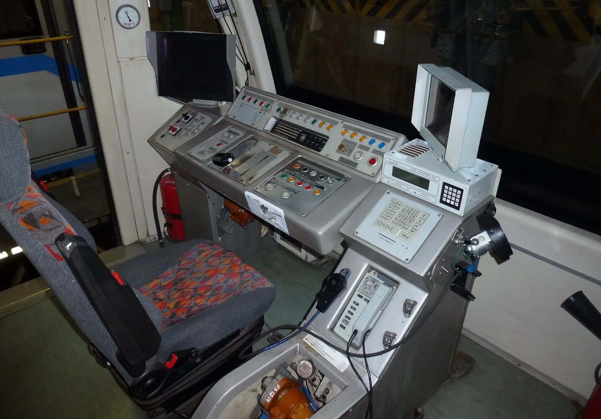

Характеристики «Русичей» одинаковы, но различны в мелких деталях
Метропоезд 81-740 «Русич»
81-740/471 — 81-74 - серия, 0 - головной, 1 - моторный промежуточный. Выпускался с 2002 по 2013 год на Метровагонмаш. Построено 40 вагонов.
Электропоезд предназначен для эксплуатации в метро и на длинных открытых участках. Каждый вагон состоит из двух сочленённых секций со свободным проходом между ними. Такой вагон размещён на трёх тележках: крайние — моторные, а средняя тележка — безмоторная, поддерживающая.
Заводские обозначение:
- Моторный-головной — 81-740
- Моторный-промежуточный — 81-741
Технические Характеристики:
Г-головной, П-промежуточный
- Вместимость — 2×344 чел. (Г) и N×370 чел. (П)
- Сидячие — 2×54 мест (Г) и N×60 мест (П)
- Высота — 3651 мм
- Длина — 2 × 28 150 мм (Г) и N × 27 200 мм (П)
- Ширина — 2700 мм
- Колея — 1435 и 1520 мм
- Конструкционная скорость — 100 км/ч
- Минимальный радиус прохождения кривых — 60 м
- Мощность ТЭД — N × 4×170 кВт (N×860 кВт)
- Тип ТЭД — асинхронные, ТАД 280М 4У2
- Род тока — постоянный (750 В)
- Служебная масса — 2×47 т (Г) и N×46 т (П)
- Составность — 2-5 сдвоенных вагонов
Последователи:
- Метропоезд серии 81-760 и 81-765 «Москва»
Эксплуатация
- Болгария: София
- Россия: Казань, Москва
  
сделали Лядов Тимофей и Никитин Станислав